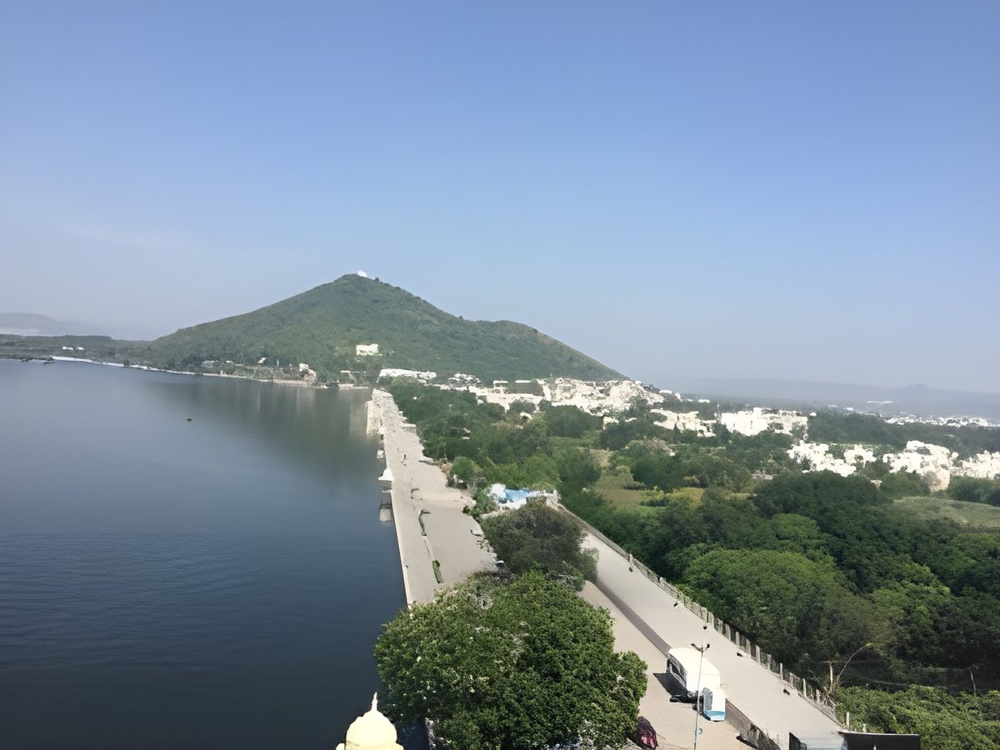
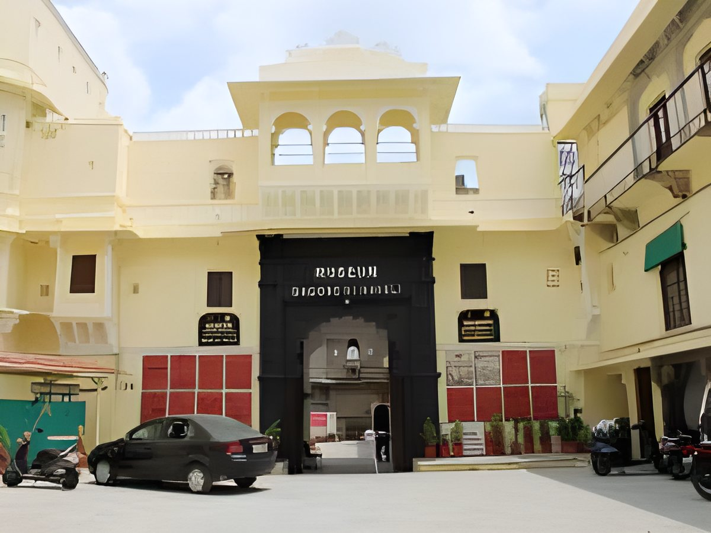
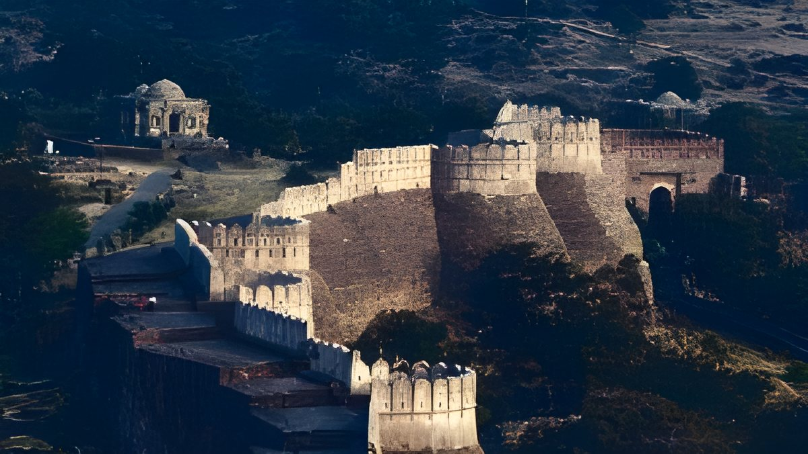

Lake Pichola
Take the sunset boat ride, the one thing not to miss in Udaipur.
Devra Udaipur
The City of Lakes, 10–15 minutes from Devra.
About Udaipur
Known as the ‘Venice of the East’, Udaipur is also called ‘the City of Lakes’ for the many lakes set into its picturesque city line against the Aravalli hills. While the lakes bring serenity, the palaces bring majesty to a city filled with warm culture and spectacular hospitality.
Whether you are planning a solo trip, a trip with friends, a romantic getaway or your wedding, Udaipur has you covered with its colourful ambience, respectful culture and delicious food. With spectacular sunsets and earthiness, there is something for everyone: art and crafts, rich heritage and history, or simply walking the city on a food trail of your own.

Places to visit
From lakes to jungle safaris to temples and forts, Udaipur has everything you might imagine in a lake city set in a desert land. Fateh Sagar Lake and Lake Pichola both offer boat rides. Among the city's temples are Eklingji, Jagdish Temple, Srinathji and Karni Mata. Kumbhalgarh Wildlife Sanctuary and Kumbhalgarh Fort make a stunning day out, and the markets are full of local handicrafts, textiles and souvenirs.
Take the sunset boat ride, the one thing not to miss in Udaipur.

On the bank of Lake Pichola, known for its massive courtyards and elaborate paintings.
A tranquil lake in the city with boat rides.
The iconic palace on Lake Pichola, now a luxury 5-star hotel.
One of the city's temples, alongside Srinathji and Karni Mata.

Cultural shows and sessions featuring local performing arts and artists.
Popular for its religious and cultural significance.

A 36 km fort wall, the longest in India, plus a wildlife sanctuary. A favourite with trekkers.
Must do in Udaipur
When in Udaipur, visit the iconic Lake Palace, now a luxury 5-star hotel, and the City Palace on the bank of Lake Pichola for its massive courtyards and elaborate paintings. Don't miss the sunset boat ride on Lake Pichola. Eklingji Temple, 22 km from Udaipur, is one of the most popular spots for its religious and cultural significance.
Trekking fans can head to Kumbhalgarh, 82 km away. Its fort wall stretches 36 km, the longest in India and second in the world only to the Great Wall of China, and there is a wildlife sanctuary too. Finish at Bagore ki Haveli Museum, whose cultural shows bring Rajasthan's history and performing arts to life.
How to reach
Book your stay
8 rooms, home-cooked Rajasthani food and the Aravalli hills all around. Book online or send us an enquiry.